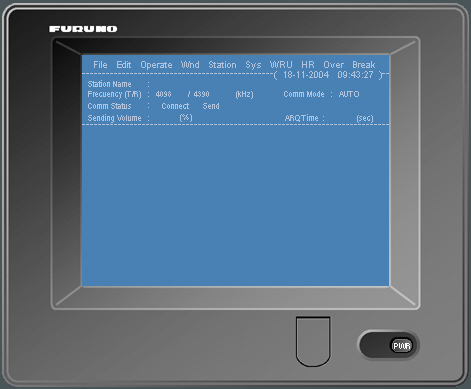

Telex NBDP MF-HF
Cada puesto del simulador va equipado con un terminal télex simulado por software mimético del equipo Furuno DP-6. Esto permite al alumno practicar todos los procedimientos necesarios para el correcto manejo de este equipo de comunicación. El alumno puede intercambiar radio-télex con estaciones costeras o con otros buques en los modos ARQ, FEC y SELFEC.
Puesto que el simulador tiene en cuenta el alcance de las comunicaciones es posible adiestrar al alumno en la selección de la frecuencia apropiada para establecer contacto con una estación dada.
